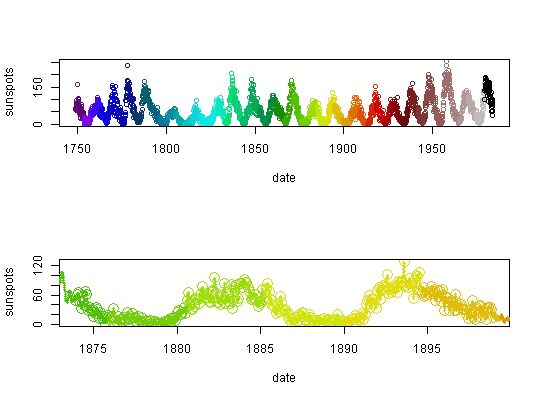

mk_timePal(x, col)
Create a time-indexed colour map, useful for maintaining an absolute scale across time series as a function of date-time.
dts <- seq(as.Date("1749-01-01"), by = "1 month", length.out = length(sunspots)) d <- data.frame(date = dts, sunspots = as.vector(t(sunspots))) tpal <- mk_timePal(d$date, col = sstPal(50)) par(mfrow = c(2, 1)) plot(sunspots ~ date, col = tpal(date), data = d) ## colours maintained by absolute date plot(sunspots ~ date, col = tpal(date), data = d[1500:1800, ], cex = 2)## we can now insert new points and maintain this colour ramp d2 <- data.frame(date = seq(min(d$date), max(d$date), by = "5 days")) d2$sunspots <- approxfun(d$date, d$sunspots)(d2$date) points(sunspots ~ date, col = tpal(date), data = d2, pch = 19, cex = 0.5)